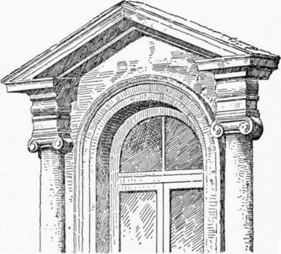
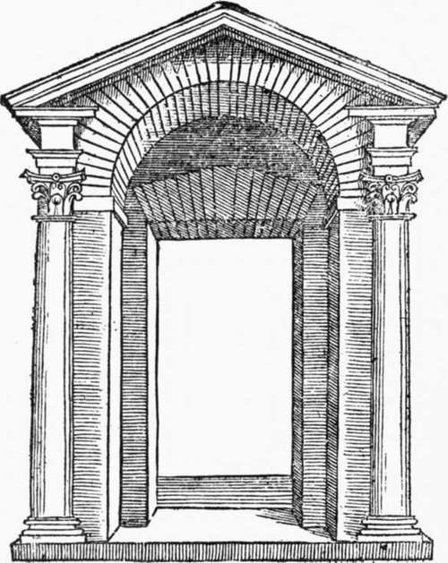

Palace Architecture Of The Roman Renaissance. Part 2
Description
This section is from the book "Character Of Renaissance Architecture", by Charles Herbert Moore. Also available from Amazon: Character of Renaissance Architecture.
Palace Architecture Of The Roman Renaissance. Part 2
The fagade of the Palazzo Farnese, by Antonio da San Gallo the younger, the grandest of these Roman palaces, again has its wall surfaces unencumbered with orders. The basement is comparatively low, and all three stories are in effect of nearly equal height. The walls are of brick with rusticated quoins of stone, and a rusticated stone portal in relief, of the simple early Florentine type, occupies the centre of the basement. The quoins suggest the influence of the rusticated pilasters on the angles of the Bartolini palace in Florence, and San Gallo has followed Baccio d' Agnolo, the architect of the Bartolini, further by introducing small orders with pediments to frame the windows of the upper stories. But for pilasters he has substituted engaged colonnettes on high pedestals, and in the principal story has made angular pediments alternate with curved ones. This mode of designing doors and windows has since become so common that it generally passes without question of its propriety. It is, however, justifiable only on the principle, universally accepted by the architects of the Renaissance, that structural members may be used for ornamental purposes without any structural meaning or expression in harmony with the character of the building to which they are applied. But this is a principle which finds no support in any thoroughly noble system of architecture — Greek, Byzantine, or Gothic. Structural members may be used properly enough with a primarily ornamental purpose when they have a character in keeping with the real structural system in which they are used. The blind arcades, and shafted archivolts of the portals, of Romanesque and Gothic architecture, are largely of this nature;1 but to surround the windows of a walled structure, like the Farnese, with columns and entablatures applied to the surface of the wall, is an architectural solecism. A further barbarism occurs in the windows of the top story, which are said to have been designed by Michael Angelo, and the fact that they are like the upper windows of the church of St. Peter lends support to the attribution. These windows of the Farnese are arched, and the crowns of the arches rise above the capitals of the flanking colonnettes so that an entablature resting on these capitals cannot pass over them. Complete entablatures are therefore omitted, entablature blocks being set upon the capitals to support the raking cornices of the pediments (Fig. 63). This makes a bad composition, because the structural system simulated would in reality be an insecure one in consequence of the absence of a tying member which the entablature should form in such a scheme. The eye instinctively feels that the pediment cornices are tending to thrust so as to overthrow the supporting colonnettes. It is true that in the windows of the principal fagade (the figure is taken from a window on the side of the building) the cornice of the entablature block is returned against the wall over the arch; but this is so far in retreat, and so inconspicuous, that it does not properly complete the pediment triangle. Precedents for many of these Renaissance aberrations of design may be found in ancient Roman art, and this particular one is foreshadowed at Baalbek, where in the pediment already noticed (p. 95) the entablature, as well as the raking cornice, is broken, the middle part being set back in the plane of the wall, and the parts over the supporting pilasters forming ressauts. But I know of no ancient instance in which the entablature is completely removed between the ressauts, unless the one figured by Serlio 1 (reproduced in Fig. 64) be ancient. He does not say that it is, but he describes it among other things that he calls ancient, and says that he found it between Foligno and Rome, and that it exhibits an architectural license because the architrave is broken by the arch.
1 These ornamental features usually have, however, in Gothic art some real structural function.
In the court of the Farnese we have a frank return to the entirely satisfactory manner. This is especially the case where the Ionic order is used, as in the principal story of this court. It is necessary here to have parts of two capitals, on the angle strip of pilaster, in order that there may be a bolster on each side parallel with those of the other capitals in the colonnade to which it belongs, and a volute on each side facing in the same direction as the others in the same series. Thus two ancient Roman combination of arch and entablature, with a Doric order in the basement, an Ionic order next above it, and an order of Corinthian pilasters in the top story. Where engaged orders are thus used in the inside of a rectangle it is usual to set a section of a pilaster in the angle, as the architect has done here. But the treatment of the capital in this angle becomes a matter of difficulty which cannot be overcome in an volutes have to be mitred together with awkward effect. A further awkwardness arising from this misuse of the orders is that of bringing three supporting members together in the angles, the end column of each adjoining colonnade, and the pilaster set in the angle in which they meet.
1 op. cit., bk. 3, P. 53.
Fig. 63. — Window of the Farnese.
Fig. 64. — Portal from Serlio.
An earlier instance of the Roman arch and entablature scheme applied to a continuous arcade occurs in Rome- in the cloister of Santa Maria della Pace, the design of which is attributed to Bramante. The upper story of this arcade is worthy of notice as having a rhythmical scheme, such as is common in mediaeval design, wrought into the neo-classic composition. This story has no arches, but a simple entablature is carried on square piers rising over the piers of the ground story, with a pilaster on the face of each, and in each interval is a small round column rising over the crown of the arch below. But this alternation of large and small, and compound and simple, members has no meaning apart from that of ornamental effect. In mediaeval design, the larger members would have the function of supporting heavier weights, and the rhythmical arrangement would thus have a primarily structural meaning.
Continue to:
- prev: Chapter VII. Palace Architecture Of The Roman Renaissance
- Table of Contents
- next: Palace Architecture Of The Roman Renaissance. Part 3